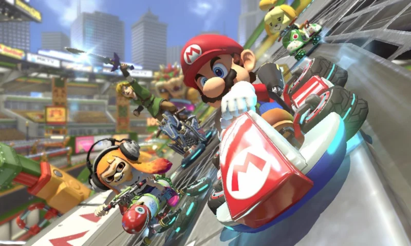
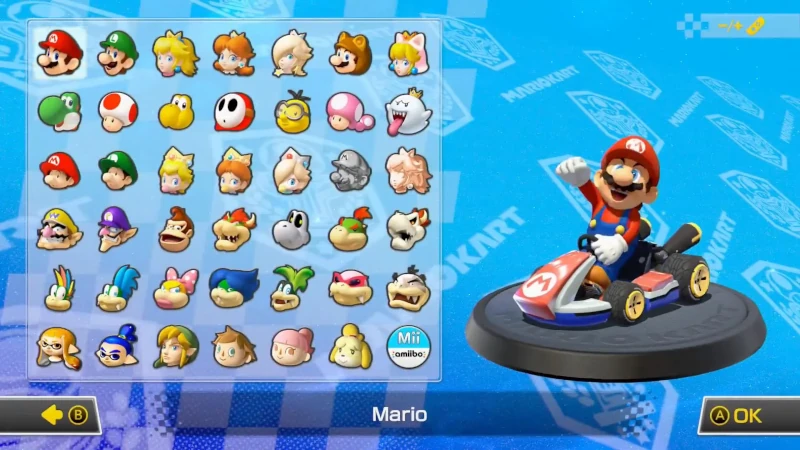
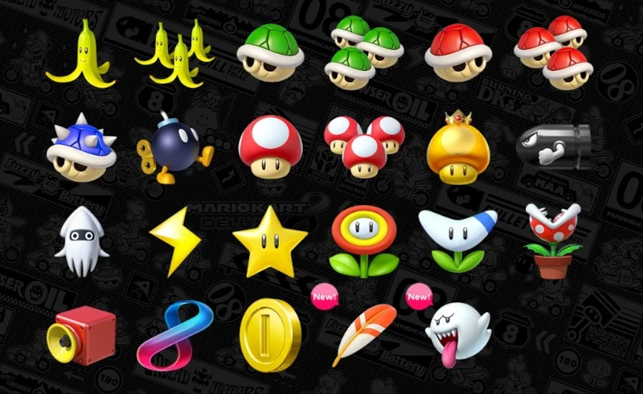

¡Descubre lo nuevo de Mario Kart™ 8 Deluxe y juega con nuevos personajes. Demuéstrale al mundo que eres el mejor en los torneos en línea o compite con tus amigos a través de internet.

Cuenta con todo lo visto previamente en Mario Kart 8 (pistas, personajes, DLCs, vehículos, etc.). Aunque no incluye nuevas pistas de carreras incluye nuevos personajes y un mejorado modo batalla.
El juego Mario Kart 8 Deluxe tiene 42 personajes para escoger, ¡la lista de personajes más grande en la historia de la serie!

¡Mario Kart 8 Deluxe tiene la posibilidad de llevar dos objetos a la vez! como en Mario Kart: Double Dash!!. No incluye objetos nuevos, pero recupera dos objetos de juegos anteriores de la saga
como Boo, el fantasma que roba objetos, y la pluma, que se usa en el modo batalla,
Podrás elegir sus karts inspirados en el juego Splatoon en Parque Viaducto para el modo batalla.

- Plátano: Es una cáscara de plátano arrojadizo que puede ser lanzado hacia atrás o hacia adelante. Son resbaladizos, y aquel que los toque acabará girando por un breve periodo de tiempo. También se puede utilizar como escudo detrás del Kart o Moto para que otro proyectil no llegué a impactar con el jugador.
- Trío de plátanos: Funcionan de la misma forma que los plátanos, pero tendrás tres e irán girando sobre tu kart, así que los que se acerquen al portador recibirán un resbalón.
- Blooper:Lanza tinta a todos los vehículos que van delante del jugador y dificulta la visión de los pilotos durante un tiempo. Si lo tiran, uno puede limpiarse la tinta entrando en una zona de agua o con los aceleradores.
- Rayo: Hace dar vueltas sin control a todos los oponentes, solamente le sale el que va en último lugar. También les reduce su tamaño y velocidad durante un cierto periodo de tiempo. Además le quita los objetos a los rivales quedándose estos por el suelo, como plátanos, caparazones y champiñones que se pueden aprovechar para dar un acelerón.
- Caparazón verde: Es un tipo de proyectil que al ser arrojado se dirige en línea recta rebotando por paredes hasta impactar al jugador que esté muy cerca, también se puede colocar detrás del kart o moto cómo escudo para evitar que otro proyectil te ataque.
- Caparazón rojo: Es la mejora del caparazón verde que al ser arrojado, se dirige automáticamente hacia el jugador que está delante del kart o moto impactando y aturdiendo durante instantes.
- Caparazón azul con pinchos: El clásico caparazón aparecido por primera vez en Mario Kart 64, que se dirige al jugador que lidera la carrera, es decir, el jugador en primer lugar, y pasando por otros jugadores si están cerca del caparazón, ya que la trayectoria es terrestre. En anteriores entregas, la trayectoria era aérea, perjudicando solo al jugador que llevará la delantera.
- Champiñón: Basado en el power-up, es un objeto de movilidad que proporciona al jugador que lo utiliza como un acelerón o propulsor.
- Superestrella: Invencibilidad ante cualquier tipo de choque y al rayo, volcando a los karts al paso del jugador mientras se utiliza, salvo caídas o golpes contra paredes. Es un objeto de tiempo limitado durante 7 segundos y medio aproximadamente.
- Boomerang:Basado en el PowerUp de Súper Mario 3D Land, puede ser usado tres veces como máximo. Lanza un búmeran que golpeará a aquellos personajes colocados alrededor del jugador que lo utiliza. Se puede lanzar hacia atrás.
- Planta Piraña: Los karts o motocicletas que se coloquen por delante del jugador serán mordidos por ella. Cada vez que alarga su tallo proporciona pequeños turbos. Objeto de tiempo limitado durante unos segundos. Es el objeto principal de los policías en el modo de batalla "Patrulla Piraña".
Entre otros objetos mas!